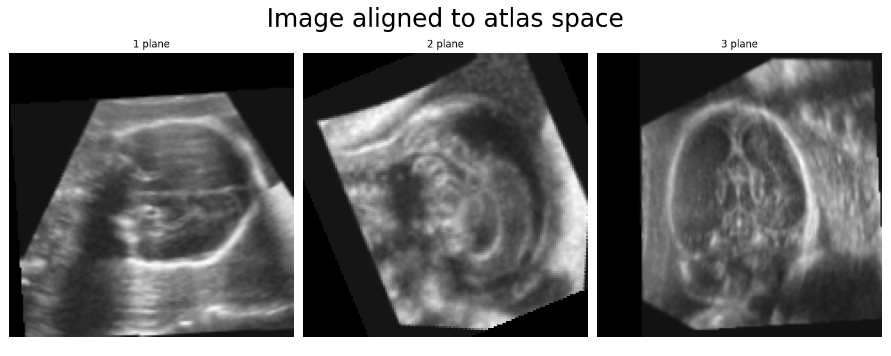
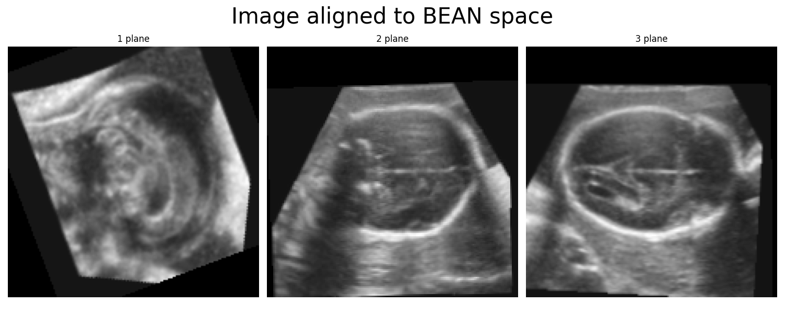

Alignment Package¶
This package contains code for aligning the fetal brain image to a common coordinate system. Due to differences in approach, the images can be aligned to two different reference spaces (default is the atlas space):
The atlas space. This is the default coordinate system, and matches the orientation of the ultrasound fetal brain atlas (Namburete at al. Nature 2023). All segmentation methods in this package expect the image to be aligned to this space without scaling. Plotting the midplanes of each axis of the 3D images aligned to the atlas space will look like this:

The BEAN space. This is the coordinate system used by the BEAN alignment network. This coordinate system is used internally by the alignment network, but it should not be used for any downstream analysis with the segmentation networks. Plotting the midplanes of each axis of the 3D image aligned to the BEAN space will look like this:

{kind=link}
{kind=link}
Note that the difference between the two coordinate systems is not only a permutation of the
axes, but also includes translation + rotation. The transformation matrix going from the
BEAN to the atlas space can be obtained from fetalbrain.alignment.align._get_atlastransform(),
and is defined for the scaled+aligned versions of the images only. Access to this function is only required
for package development or advanced use of the package.
The above images can be created using the following code:
from pathlib import Path
from fetalbrain.alignment.align import align_scan
from fetalbrain.utils import read_image, plot_midplanes
from fetalbrain.model_paths import EXAMPLE_IMAGE_PATH
TEST_IMAGE_PATH = Path(EXAMPLE_IMAGE_PATH)
image, _ = read_image(TEST_IMAGE_PATH)
# align the scan to the atlas space
aligned_image, params = align_scan(image, to_atlas=True, scale=False)
plot_midplanes(aligned_image.numpy().squeeze(), 'Image aligned to atlas space')
# align the scan to the BEAN space
aligned_image, params = align_scan(image, to_atlas=False, scale=False)
plot_midplanes(aligned_image.numpy().squeeze(), 'Image aligned to BEAN space')
For more information on the use of the alignment functions see Alignment.
Credits¶
The code in the alignment package has been primarily developed by Felipe Moser. A preliminary version of the methods have been described in a NeuroImage paper:
The implementation of the rotation parameters has since been updated to use quaternions instead of Euler angles. A detailed description of this implementation can be found in the PhD thesis of Felipe Moser:
<add thesis link here>